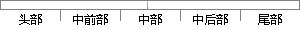

" #查询被禁用账户sql
片段位置图

相似结果|
相似片段 1：='{0}'", obj.CardId);string pwd = DBHelper.DBFile3(sql);if (pwd == obj.Pwd){//是否被禁用sql
相似片段 2：6.2.5 恢复删除的电子邮箱在某些状况之下，如电子邮箱账户信息由于硬件故障、人为误操作或一些不可预见的灾难而导致被禁用了或是删除了。这个时候作者将电子邮箱连接到新的的或现有的电子邮箱帐户恢复这个
相似片段 3：信息，包括添加账户、查询账户、删除账户、禁用/激活账户、家。删除的账户不可恢复，建议慎重使用，如有需要，禁用账户即可。账户的查询为模糊查询，查询结果直接显示在主信息区。账户密码重置功能是提供给管理员用来解决管理员/评审专家密码找回时使用的，重置后的密码为系统的默认密码。
相似片段 4：这个对话框只具有安慰性质，不会起任何实质作用。图4 guest账户被禁用在这种情况下，解决问题的方法很简单，只要在服务器端将guest账户启用，客户机便能够成功的访问服务器。(2)服务器禁用了简单
相似片段 5：结果涉及数据库操作的，会在页面顶部弹出提示框，显示操作的结果3.4.3 管理员及评审专家管理模块该模块是超级管理员的管理模块，主要功能是管理系统的普通管理员和评审专家的账号。具体的功能包括：添加账户、查询账户、删除账户、禁用/激活账户、以及重置密码。
|
※ 片段修改建议 ※
近似词参考：- 查询：盘问
系统自动生成语句：" #盘问被禁用账户sql
注：本片段修改建议为系统自动生成，仅供参考。